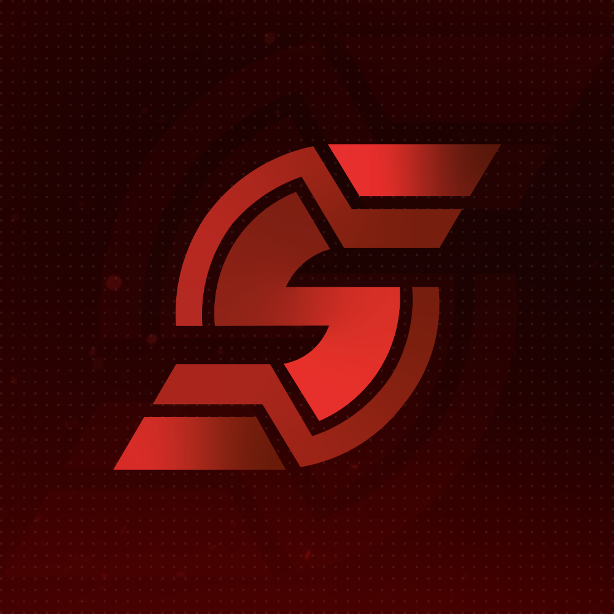

Switch between Steam accounts with login tokens in one click. Private, fast, and built for shefu223.shop.
Paste your token, press Add, and sign in with one click. No password, no Steam Guard prompt.
Every account shows if its token still works, checked right on your PC.
See Premier rating, Wingman rank, and cooldown at a glance.
Account checks run locally. No proxies, nothing about your accounts leaves your machine.
See and copy the full line you pasted whenever you need it.
Accounts bought from the shop show a live warranty countdown.
Account checks are local. No proxies and no shop service read your accounts. The check reuses the login Steam already granted, so it does not change your token and does not send a new login email. The build ships with the developer's machine details scrubbed out.